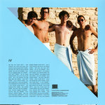

Quick Takes (July 2016)
This past month was a generally slow one in terms of album releases, and yet Carl and I were able to find some true gems that will surely stick with us through the entire year. I was downright elated every time I spun the rather joyful Wildflower, The Avalanches comeback statement, while Carl gathered great insight from Dev Hynes's artful pop opus Freetown Sound. Other highlights include Schoolboy Q's ambitious Blank Face LP, as well as Metronomy's infectious Summer 08. And could any of you give the often-overlooked post-hardcore outfit Frameworks a chance?
What were your favorite albums during the month of July? Anything we didn't get to review on our site that we should've? You can always reach us on facebook, or on our official twitter page. - Juan
...

The Avalanches
Wildflower
(Astralwerks)
All it took was one classic for The Avalanches to earn their place as one of the most important acts of the 2000’s. When you reach that high level of critical and popular adulation, is it even worth revisiting the past when there’s no way to ever replicate that glory? The only answer the Avalanches can provide for that question is a big, resounding: YES!! It takes some serious skill to assemble sample-based electronic music that eclipses the virtues of more conventional songcraft, and yet their creations never feel labored over or particularly calculated. There were some small changes this time around in the making of Wildflower, though: guest appearances by the likes of Biz Markie and Toro y Moi try to provide some personality to songs that already brim with gleeful, sometimes even derpy euphoria. Not to say that the extended cast of characters is necessarily a gripe, but it’s certainly not needed when The Avalanches themselves already add so much texture and color to a task that, in theory, sounds painstakingly difficult. Wildflower is simply a joy, an euphonious hour-long journey that exists in some wonderfully naive and blissful alternate universe. It’s an aural paradise you’ll never want to leave. [8/10] Juan Edgardo Rodríguez

BADBADNOTGOOD
IV
(Innovative Leisure)
On their imaginatively titled fourth record, BADBADNOTGOOD have shown a willingness to venture further away from their hip-hop roots than ever before. Their impulsive jam motif has been relocated to the smoky shadows of its dimly lit boudoir, paving the way for an effortlessly slick R&B lounge sound. IV is overflowing with greasy modern jazz ideas, but its strongest points are the moments where their guests add their own spin to BBNG’s lubricated sound. Future Islands frontman Sam Herring is sublime in the weightily pensive Time Moves Slow. His contused, frank vocal adds a penetration to a BBNG soundscape that hasn’t been there before, all whilst maintaining the smoldering semblance that has. On the album’s penultimate track In Your Eyes, Toronto soul singer Charlotte Day Wilson comes to the fore, diffusing a sultry haze over a deliciously executed retro jazz sound. BBNG have always been fluent and sonically articulate, but enlisting the talents of suitable vocalists to thicken their smokescreen strengthens their suit. [7/10] Carl Purvis
 Blood Orange
Blood Orange
Freetown Sound
(Domino)
Dev Hynes exponential expansion since undertaking the Blood Orange moniker continues with his third album under it. Freetown Sound references the city of Freetown, the capital of Sierra Leone and the hometown to Hynes’ father. It’s a political statement – a black record that takes on an approach not too dissimilar to To Pimp a Butterfly – but the artful aesthetic is laced with a pop sensibility that is entirely original. His ability to create a fusion of electro-soul, rubbery funk and a Michael Jackson-like delectability allows the resonance of intrinsic oppression to have its weight distributed, making for a challenging but consistently rewarding listen. It is fluorescent and captivating throughout, and fused together meticulously, but you get the impression that no matter how much you allow yourself to be encapsulated by it, it will only ever be completely understood by its creator. It’s a collection of unsightly surveillances expressed in a magnificent manner, and the work of a man more than capable of out-creating himself. [8/10- Believe The Hype] Carl Purvis
Descendents
Hypercaffium Spazzinate
(Epitaph)
It’s been a good 12 years since The Descendents released their last studio effort Cool to be You, and it looks like they haven’t aged one bit with their anthemic odes to the eternally youthful. It’d be somewhat unfair to blame the elder statesmen for their lack of innovation, and Hypercaffium Spanninate delivers those urgent punk-pop jams with an amiability that befits their status as middle-aged mentors to the misfits and the dissented voices. Even if they’ve mostly been absent for the past twenty years, it’s always cause for celebration to hear that the band are embracing the inexorable passing of time. Nevertheless, there are times when their elementary songwriting can make them look as if they’re stuck in their teenage angst, which is expected considering their genuinely fun play on nostalgia is quite necessary to their brand. But the tunes do stack up, and when it’s delivered with this much conviction, that’s reason enough to rekindle that loyal, longstanding friendship with their most ardent fans. [6/10] Juan Edgardo Rodríguez
Frameworks
Smother
(Deathwish)
There’s nothing tame about Frameworks’ chilling intensity. In a banner year for both emo and screamo revivalists, it’s already a shame to see how the Gainesville, Florida quintet’s fiery sophomore effort hasn’t received as much attention as some of their other contemporaries. And there’s an unfortunate, yet cogent reason for this - Frameworks don’t like to keep things simple, often times contorting their songs with atypical structures that showcase the more inaccessible side of post-hardcore. Smother is a sizable step up from their 2014 effort Loom, taking that album’s same impassioned belligerence with a richer, more broad melodic palette. The screaming eclipses the entire instrumentation at hand, sure, but it wouldn’t be as powerful if it weren’t balanced with some of the most lucid guitar lines you’ll hear all year. A true exercise in letting out one’s own instinctual impulses, Smother is another deeply impassioned endeavor from a band that deserves a larger audience. [7/10] Juan Edgardo Rodríguez
Lou Rhodes
theyesandeye
(Nude Music)
Lou Rhodes’ fourth solo LP is an attractive affair, and its folk sensibilities are textbook. Her lyrics are delivered in a stimulating, provoking rill of apprehension. The melodies are delicate and elegant, utilising the genial sounds of harps and fragile guitars. There’s no doubt about the fact that theyesandeye is a notable shift across from the folk-by-numbers style of her previous solo work, with a sparse, abstracted ambience moving her into unchartered waters. Rhodes sheathes her arrangements in a rural landscape, and the tracks themselves are misty with a marked attention to detail. The doublet of Hope and Glory and Circle Song are the album’s keystone, meandering from the innocence and trepidation of the fear of dealing with loss through to a sober, contemplative outlook. theyesandeye is charming, and even throws in a cover of The xx’s Angels, but is lacking the dimension required to make it anything more than a polite and pleasant affair. [6/10] Carl Purvis
Metronomy
Summer 08
(Because Music)
After the slick, sculpted warmth of 2011’s excellent The English Riviera and the peculiar psychedelica of Love Letters, Joe Mount has reverted back to the infectious candor of 2008’s Night’s Out with his band’s 5thLP. Mount is behind pretty much everything you hear on this record, from the squelching synths, chunk-groove basslines and flamboyant vocal delivery, and it’s clear that he’s in absolute control. Every flutter of sound is kept on a meticulously measured tether, and the result is that the majority of the tracks on the record are devastatingly catchy and persistently rapacious. Opening track Back Together prances with a kaleidoscopic groove, clattering toms, chopping guitars and a cavalier vocal. Mick Slow is seductive, irresistible electro. Summer Jam is a bewitching, reflective track, colluding a massive array of sounds into an imperforate way to close out the album. Summer 08 is good work from Mount, and an album with its fair share of corking tracks. [7/10] Carl Purvis
MSTRKRFT
OPERATOR
(Last Gang)
In the seven years that has passed since MSTRKRFT dropped their previous LP, the landscape of dance punk has changed so much so that it’s almost vanished in every sense other than a nostalgic one. Jesse F. Keeler and AL-P rely on that nostalgia with OPERATOR, but it’s not enough to make the album much more than a means to make the listener recoil. For the most part, the hardcore punk that is the lifeblood of the Toronto duo takes on the role of a particularly hostile chainsaw. The frenzied techno nods to The Prodigy’s 90s work, but even trumps them on the lacerating scale, with tuneless synths pounding and bruising you into submission. Amongst the wince-inducing, inimical assault however, there is a track that is worth praising. With Runaway, MSTRKRFT find a balance between the antagonistic incursion and electro-funk wizardry, but asides from that standout, the record as a whole is a jarring affair. [4/10] Carl Purvis
Schoolboy Q
Blank Face LP
(Top Dawg Entertainment)
In a year where most rap moguls have been dropping their big, important statements, it’d be inevitable for Schoolboy Q to try to follow suit with his very own magnum opus. The South Central rapper holds more of a stern presence, which could be either a virtue or a fallacy to whoever you ask, seeing as he never seems to cross over any boundaries that don’t necessarily suit him. Schoolboy does take some significant chances on Blank Face, though, with a smattering of bloated, sprawling singles that don’t necessarily lead us to understanding him better as a performer. His talent as a gifted producer and arranger is uncontested, though - highlights like Groovy Tony/Eddie Kane and Ride Out showcase his stark perspicacity as a modern gangsta rap innovator, while the more exploratory WHateva U Want meshes that same formula with a dancehall flavor that is oddly evocative. The studious verses he constructs are still his cup of tea, with a careful attention to flow that matches his tough persona. Blank Face is occasionally too indulgent for his own good, as he also follows trap and net-soul trends in awkward fashion, but the amount of genuine, larger-than-life parables continue to expose an artist who still wrestles with his hard-knock past. [8/10] Juan Edgardo Rodríguez
Trust Punks
Double Bind
(Spunk)
Auckland, New Zealand’s Trust Punks first started out as a jangle pop act that crafted gray-tinged mid tempo songs. There were subtle signs of a band that wanted to venture into grimier territory, and on their latest, Double Bind, they’ve transmuted into a more acerbic outfit that is greatly influenced by some avant-garde experimentalism. The more wide-ranging sonic technique of Double Bind trickily balances lo-fi noise with serrated guitar lines, though it never tends to obscure their sharp ear for addictive melodies. That said, they do lay their hand on a sorting of musical personalities with a disciplined eye; it’s evident they’re still in search of their true identity. Still, the raw energy that they release on Double Bind points to a more punk-minded exploration of sound that emulates their influences with flattering ease. [7/10] Juan Edgardo Rodríguez
9 August, 2016 - 14:15 — No Ripcord Staff